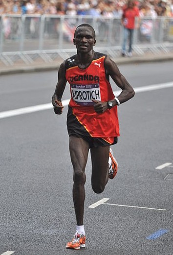

Figure: A deep neural network. Input nodes are shown at the bottom. Each hidden layer is the result of applying an affine transformation to the previous layer and placing through an activation function.
Even in the early days of Gaussian processes in machine learning, it was understood that we were throwing something fundamental away. This is perhaps captured best by David MacKay in his 1997 NeurIPS tutorial on Gaussian processes, where he asked “Have we thrown out the baby with the bathwater?”. The quote below is from his summarization paper.
According to the hype of 1987, neural networks were meant to be intelligent models which discovered features and patterns in data. Gaussian processes in contrast are simply smoothing devices. How can Gaussian processes possibly repalce neural networks? What is going on?
MacKay (n.d.)
Figure: A deep neural network. Input nodes are shown at the bottom. Each hidden layer is the result of applying an affine transformation to the previous layer and placing through an activation function.
Mathematically, each layer of a neural network is given through computing the activation function, $\basisFunction(\cdot)$, contingent on the previous layer, or the inputs. In this way the activation functions, are composed to generate more complex interactions than would be possible with any single layer.
$$
\begin{align}
\hiddenVector_{1} &= \basisFunction\left(\mappingMatrix_1 \inputVector\right)\\
\hiddenVector_{2} &= \basisFunction\left(\mappingMatrix_2\hiddenVector_{1}\right)\\
\hiddenVector_{3} &= \basisFunction\left(\mappingMatrix_3 \hiddenVector_{2}\right)\\
\dataVector &= \mappingVector_4 ^\top\hiddenVector_{3}
\end{align}
$$
[edit]
One potential problem is that as the number of nodes in two adjacent layers increases, the number of parameters in the affine transformation between layers, $\mappingMatrix$, increases. If there are ki − 1 nodes in one layer, and ki nodes in the following, then that matrix contains kiki − 1 parameters, when we have layer widths in the 1000s that leads to millions of parameters.
One proposed solution is known as dropout where only a sub-set of the neural network is trained at each iteration. An alternative solution would be to reparameterize $\mappingMatrix$ with its singular value decomposition.
$$
\mappingMatrix = \eigenvectorMatrix\eigenvalueMatrix\eigenvectwoMatrix^\top
$$
or
$$
\mappingMatrix = \eigenvectorMatrix\eigenvectwoMatrix^\top
$$
where if $\mappingMatrix \in \Re^{k_1\times k_2}$ then $\eigenvectorMatrix\in \Re^{k_1\times q}$ and $\eigenvectwoMatrix \in \Re^{k_2\times q}$, i.e. we have a low rank matrix factorization for the weights.
Figure: Pictorial representation of the low rank form of the matrix $\mappingMatrix$.
[edit]
Figure: Inserting the bottleneck layers introduces a new set of variables.
Including the low rank decomposition of $\mappingMatrix$ in the neural network, we obtain a new mathematical form. Effectively, we are adding additional latent layers, $\latentVector$, in between each of the existing hidden layers. In a neural network these are sometimes known as bottleneck layers. The network can now be written mathematically as
$$
\begin{align}
\latentVector_{1} &= \eigenvectwoMatrix^\top_1 \inputVector\\
\hiddenVector_{1} &= \basisFunction\left(\eigenvectorMatrix_1 \latentVector_{1}\right)\\
\latentVector_{2} &= \eigenvectwoMatrix^\top_2 \hiddenVector_{1}\\
\hiddenVector_{2} &= \basisFunction\left(\eigenvectorMatrix_2 \latentVector_{2}\right)\\
\latentVector_{3} &= \eigenvectwoMatrix^\top_3 \hiddenVector_{2}\\
\hiddenVector_{3} &= \basisFunction\left(\eigenvectorMatrix_3 \latentVector_{3}\right)\\
\dataVector &= \mappingVector_4^\top\hiddenVector_{3}.
\end{align}
$$
$$
\begin{align}
\latentVector_{1} &= \eigenvectwoMatrix^\top_1 \inputVector\\
\latentVector_{2} &= \eigenvectwoMatrix^\top_2 \basisFunction\left(\eigenvectorMatrix_1 \latentVector_{1}\right)\\
\latentVector_{3} &= \eigenvectwoMatrix^\top_3 \basisFunction\left(\eigenvectorMatrix_2 \latentVector_{2}\right)\\
\dataVector &= \mappingVector_4 ^\top \latentVector_{3}
\end{align}
$$
[edit]
Now if we replace each of these neural networks with a Gaussian process. This is equivalent to taking the limit as the width of each layer goes to infinity, while appropriately scaling down the outputs.
$$
\begin{align}
\latentVector_{1} &= \mappingFunctionVector_1\left(\inputVector\right)\\
\latentVector_{2} &= \mappingFunctionVector_2\left(\latentVector_{1}\right)\\
\latentVector_{3} &= \mappingFunctionVector_3\left(\latentVector_{2}\right)\\
\dataVector &= \mappingFunctionVector_4\left(\latentVector_{3}\right)
\end{align}
$$
[edit]
[edit]
Figure: The DeepFace architecture (Taigman et al. 2014), visualized through colors to represent the functional mappings at each layer. There are 120 million parameters in the model.
The DeepFace architecture (Taigman et al. 2014) consists of layers that deal with translation and rotational invariances. These layers are followed by three locally-connected layers and two fully-connected layers. Color illustrates feature maps produced at each layer. The neural network includes more than 120 million parameters, where more than 95% come from the local and fully connected layers.
[edit]

Figure: Deep learning models are composition of simple functions. We can think of a pinball machine as an analogy. Each layer of pins corresponds to one of the layers of functions in the model. Input data is represented by the location of the ball from left to right when it is dropped in from the top. Output class comes from the position of the ball as it leaves the pins at the bottom.
Sometimes deep learning models are described as being like the brain, or too complex to understand, but one analogy I find useful to help the gist of these models is to think of them as being similar to early pin ball machines.
In a deep neural network, we input a number (or numbers), whereas in pinball, we input a ball.
Think of the location of the ball on the left-right axis as a single number. Our simple pinball machine can only take one number at a time. As the ball falls through the machine, each layer of pins can be thought of as a different layer of ‘neurons’. Each layer acts to move the ball from left to right.
In a pinball machine, when the ball gets to the bottom it might fall into a hole defining a score, in a neural network, that is equivalent to the decision: a classification of the input object.
An image has more than one number associated with it, so it is like playing pinball in a hyper-space.
Figure: At initialization, the pins, which represent the parameters of the function, aren’t in the right place to bring the balls to the correct decisions.
Figure: After learning the pins are now in the right place to bring the balls to the correct decisions.
Learning involves moving all the pins to be in the correct position, so that the ball ends up in the right place when it’s fallen through the machine. But moving all these pins in hyperspace can be difficult.
In a hyper-space you have to put a lot of data through the machine for to explore the positions of all the pins. Even when you feed many millions of data points through the machine, there are likely to be regions in the hyper-space where no ball has passed. When future test data passes through the machine in a new route unusual things can happen.
Adversarial examples exploit this high dimensional space. If you have access to the pinball machine, you can use gradient methods to find a position for the ball in the hyper space where the image looks like one thing, but will be classified as another.
Probabilistic methods explore more of the space by considering a range of possible paths for the ball through the machine. This helps to make them more data efficient and gives some robustness to adversarial examples.
Mathematically, a deep Gaussian process can be seen as a composite multivariate function,
$$
\mathbf{g}(\inputVector)=\mappingFunctionVector_5(\mappingFunctionVector_4(\mappingFunctionVector_3(\mappingFunctionVector_2(\mappingFunctionVector_1(\inputVector))))).
$$
Or if we view it from the probabilistic perspective we can see that a deep Gaussian process is specifying a factorization of the joint density, the standard deep model takes the form of a Markov chain.
$$
p(\dataVector|\inputVector)= p(\dataVector|\mappingFunctionVector_5)p(\mappingFunctionVector_5|\mappingFunctionVector_4)p(\mappingFunctionVector_4|\mappingFunctionVector_3)p(\mappingFunctionVector_3|\mappingFunctionVector_2)p(\mappingFunctionVector_2|\mappingFunctionVector_1)p(\mappingFunctionVector_1|\inputVector)
$$
Figure: Probabilistically the deep Gaussian process can be represented as a Markov chain.
Figure: More usually deep probabilistic models are written vertically rather than horizontally as in the Markov chain.
[edit]
If the result of composing many functions together is simply another function, then why do we bother? The key point is that we can change the class of functions we are modeling by composing in this manner. A Gaussian process is specifying a prior over functions, and one with a number of elegant properties. For example, the derivative process (if it exists) of a Gaussian process is also Gaussian distributed. That makes it easy to assimilate, for example, derivative observations. But that also might raise some alarm bells. That implies that the marginal derivative distribution is also Gaussian distributed. If that’s the case, then it means that functions which occasionally exhibit very large derivatives are hard to model with a Gaussian process. For example, a function with jumps in.
A one off discontinuity is easy to model with a Gaussian process, or even multiple discontinuities. They can be introduced in the mean function, or independence can be forced between two covariance functions that apply in different areas of the input space. But in these cases we will need to specify the number of discontinuities and where they occur. In otherwords we need to parameterise the discontinuities. If we do not know the number of discontinuities and don’t wish to specify where they occur, i.e. if we want a non-parametric representation of discontinuities, then the standard Gaussian process doesn’t help.
The deep Gaussian process leads to non-Gaussian models, and non-Gaussian characteristics in the covariance function. In effect, what we are proposing is that we change the properties of the functions we are considering by composing stochastic processes. This is an approach to creating new stochastic processes from well known processes.
Additionally, we are not constrained to the formalism of the chain. For example, we can easily add single nodes emerging from some point in the depth of the chain. This allows us to combine the benefits of the graphical modelling formalism, but with a powerful framework for relating one set of variables to another, that of Gaussian processes
Figure: More generally we aren’t constrained by the Markov chain. We can design structures that respect our belief about the underlying conditional dependencies. Here we are adding a side note from the chain.
[edit]
The challenge for composition of probabilistic models is that you need to propagate a probability densities through non linear mappings. This allows you to create broader classes of probability density. Unfortunately it renders the resulting densities intractable.
Figure: A two dimensional grid mapped into three dimensions to form a two dimensional manifold.
Figure: A one dimensional line mapped into two dimensions by two separate independent functions. Each point can be mapped exactly through the mappings.
Figure: A Gaussian density over the input of a non linear function leads to a very non Gaussian output. Here the output is multimodal.
[edit]
The standard variational approach would require the expectation of $\log p(\dataVector|\latentMatrix)$ under $q(\latentMatrix)$.
$$
\begin{align}
\log p(\dataVector|\latentMatrix) = & -\frac{1}{2}\dataVector^\top\left(\kernelMatrix_{\mappingFunctionVector, \mappingFunctionVector}+\dataStd^2\eye\right)^{-1}\dataVector \\ & -\frac{1}{2}\log \det{\kernelMatrix_{\mappingFunctionVector, \mappingFunctionVector}+\dataStd^2 \eye} -\frac{\numData}{2}\log 2\pi
\end{align}
$$
But this is extremely difficult to compute because $\kernelMatrix_{\mappingFunctionVector, \mappingFunctionVector}$ is dependent on $\latentMatrix$ and it appears in the inverse.
The alternative approach is to consider the collapsed variational bound (used for low rank (sparse is a misnomer) Gaussian process approximations.
$$
p(\dataVector)\geq \prod_{i=1}^\numData c_i \int \gaussianDist{\dataVector}{\expSamp{\mappingFunctionVector}}{\dataStd^2\eye}p(\inducingVector) \text{d}\inducingVector
$$
$$
p(\dataVector|\latentMatrix )\geq \prod_{i=1}^\numData c_i \int \gaussianDist{\dataVector}{\expDist{\mappingFunctionVector}{p(\mappingFunctionVector|\inducingVector, \latentMatrix)}}{\dataStd^2\eye}p(\inducingVector) \text{d}\inducingVector
$$
$$
\int p(\dataVector|\latentMatrix)p(\latentMatrix) \text{d}\latentMatrix \geq \int \prod_{i=1}^\numData c_i \gaussianDist{\dataVector}{\expDist{\mappingFunctionVector}{p(\mappingFunctionVector|\inducingVector, \latentMatrix)}}{\dataStd^2\eye} p(\latentMatrix)\text{d}\latentMatrix p(\inducingVector) \text{d}\inducingVector
$$
To integrate across $\latentMatrix$ we apply the lower bound to the inner integral.
$$
\begin{align}
\int \prod_{i=1}^\numData c_i \gaussianDist{\dataVector}{\expDist{\mappingFunctionVector}{p(\mappingFunctionVector|\inducingVector, \latentMatrix)}}{\dataStd^2\eye} p(\latentMatrix)\text{d}\latentMatrix \geq & \expDist{\sum_{i=1}^\numData\log c_i}{q(\latentMatrix)}\\ & +\expDist{\log\gaussianDist{\dataVector}{\expDist{\mappingFunctionVector}{p(\mappingFunctionVector|\inducingVector, \latentMatrix)}}{\dataStd^2\eye}}{q(\latentMatrix)}\\& + \KL{q(\latentMatrix)}{p(\latentMatrix)}
\end{align}
$$
* Which is analytically tractable for Gaussian $q(\latentMatrix)$ and some covariance functions.
Need expectations under $q(\latentMatrix)$ of:
$$
\log c_i = \frac{1}{2\dataStd^2} \left[\kernelScalar_{i, i} - \kernelVector_{i, \inducingVector}^\top \kernelMatrix_{\inducingVector, \inducingVector}^{-1} \kernelVector_{i, \inducingVector}\right]
$$
and
$$
\log \gaussianDist{\dataVector}{\expDist{\mappingFunctionVector}{p(\mappingFunctionVector|\inducingVector,\dataMatrix)}}{\dataStd^2\eye} = -\frac{1}{2}\log 2\pi\dataStd^2 - \frac{1}{2\dataStd^2}\left(\dataScalar_i - \kernelMatrix_{\mappingFunctionVector, \inducingVector}\kernelMatrix_{\inducingVector,\inducingVector}^{-1}\inducingVector\right)^2
$$
This requires the expectations
$$
\expDist{\kernelMatrix_{\mappingFunctionVector,\inducingVector}}{q(\latentMatrix)}
$$
and
$$
\expDist{\kernelMatrix_{\mappingFunctionVector,\inducingVector}\kernelMatrix_{\inducingVector,\inducingVector}^{-1}\kernelMatrix_{\inducingVector,\mappingFunctionVector}}{q(\latentMatrix)}
$$
which can be computed analytically for some covariance functions (Damianou, Titsias, and Lawrence 2016) or through sampling (Damianou 2015; Salimbeni and Deisenroth 2017).
Variational approximations aren’t the only approach to approximate inference. The original work on deep Gaussian processes made use of MAP approximations (Lawrence and Moore 2007), which couldn’t propagate the uncertainty through the model at the data points but sustain uncertainty elsewhere. Since the variational approximation was proposed researchers have also considered sampling approaches (Havasi, Hernández-Lobato, and Murillo-Fuentes 2018) and expectation propagation (Bui et al. 2016).
Figure: Even the latest work on Bayesian neural networks has severe problems handling uncertainty. In this example, (Izmailov et al. 2019), methods even fail to interpolate through the data correctly or provide well calibrated error bars in regions where data is observed.
The argument in the deep learning revolution is that deep architectures allow us to develop an abstraction of the feature set through model composition. Composing Gaussian processes is analytically intractable. To form deep Gaussian processes we use a variational approach to stack the models.
[edit]
Figure: Composition of linear functions just leads to a new linear function. Here you see the result of multiple affine transformations applied to a square in two dimensions.
Stacking a series of linear functions simply leads to a new linear function. The use of multiple linear function merely changes the covariance of the resulting Gaussian. If
$$
\latentMatrix \sim \gaussianSamp{\zerosVector}{\eye}
$$
and the ith hidden layer is a multivariate linear transformation defined by $\weightMatrix_i$,
$$
\dataMatrix = \latentMatrix\weightMatrix_1 \weightMatrix_2 \dots \weightMatrix_\numLayers
$$
then the rules of multivariate Gaussians tell us that
$$
\dataMatrix \sim \gaussianSamp{\zerosVector}{\weightMatrix_\numLayers \dots \weightMatrix_1 \weightMatrix^\top_1 \dots \weightMatrix^\top_\numLayers}.
$$
So the model can be replaced by one where we set $\vMatrix = \weightMatrix_\numLayers \dots \weightMatrix_2 \weightMatrix_1$. So is such a model trivial? The answer is that it depends. There are two cases in which such a model remaisn interesting. Firstly, if we make intermediate observations stemming from the chain. So, for example, if we decide that,
$$
\latentMatrix_i = \weightMatrix_i \latentMatrix_{i-1}
$$
and set $\latentMatrix_{0} = \inputMatrix \sim \gaussianSamp{\zerosVector}{\eye}$, then the matrices $\weightMatrix$ inter-relate a series of jointly Gaussian observations in an interesting way, stacking the full data matrix to give
$$
\latentMatrix = \begin{bmatrix}
\latentMatrix_0 \\
\latentMatrix_1 \\
\vdots \\
\latentMatrix_\numLayers
\end{bmatrix}
$$
we can obtain
$$\latentMatrix \sim \gaussianSamp{\zerosVector}{\begin{bmatrix}
\eye & \weightMatrix^\top_1 & \weightMatrix_1^\top\weightMatrix_2^\top & \dots & \vMatrix^\top \\
\weightMatrix_1 & \weightMatrix_1 \weightMatrix_1^\top & \weightMatrix_1 \weightMatrix_1^\top \weightMatrix_2^\top & \dots & \weightMatrix_1 \vMatrix^\top \\
\weightMatrix_2 \weightMatrix_1 & \weightMatrix_2 \weightMatrix_1 \weightMatrix_1^\top & \weightMatrix_2 \weightMatrix_1 \weightMatrix_1^\top \weightMatrix_2^\top & \dots & \weightMatrix_2 \weightMatrix_1 \vMatrix^\top \\
\vdots & \vdots & \vdots & \ddots & \vdots \\
\vMatrix & \vMatrix \weightMatrix_1^\top & \vMatrix \weightMatrix_1^\top \weightMatrix_2^\top& \dots & \vMatrix\vMatrix^\top
\end{bmatrix}}$$
which is a highly structured Gaussian covariance with hierarchical dependencies between the variables $\latentMatrix_i$.
[edit]
Figure: Stacking Gaussian process models leads to non linear mappings at each stage. Here we are mapping from two dimensions to two dimensions in each layer.
Note that once the box has folded over on itself, it cannot be unfolded. So a feature that is generated near the top of the model cannot be removed further down the model.
This folding over effect happens in low dimensions. In higher dimensions it is less common.
Observation of this effect at a talk in Cambridge was one of the things that caused David Duvenaud (and collaborators) to consider the behavior of deeper Gaussian process models (Duvenaud et al. 2014).
Such folding over in the latent spaces necessarily forces the density to be non-Gaussian. Indeed, since folding-over is avoided as we increase the dimensionality of the latent spaces, such processes become more Gaussian. If we take the limit of the latent space dimensionality as it tends to infinity, the entire deep Gaussian process returns to a standard Gaussian process, with a covariance function given as a deep kernel (such as those described by Cho and Saul (2009)).
Further analysis of these deep networks has been conducted by Dunlop et al. (n.d.), who use analysis of the deep network’s stationary density (treating it as a Markov chain across layers), to explore the nature of the implied process prior for a deep GP.
Both of these works, however, make constraining assumptions on the form of the Gaussian process prior at each layer (e.g. same covariance at each layer). In practice, the form of this covariance can be learnt and the densities described by the deep GP are more general than those mentioned in either of these papers.
[edit]
Figure: Visualization of mapping of a two dimensional space through a deep Gaussian process.
David Duvenaud also created a YouTube video to help visualize what happens as you drop through the layers of a deep GP.
[edit]
Gaussian processes are a flexible tool for non-parametric analysis with uncertainty. The GPy software was started in Sheffield to provide a easy to use interface to GPs. One which allowed the user to focus on the modelling rather than the mathematics.

Figure: GPy is a BSD licensed software code base for implementing Gaussian process models in Python. It is designed for teaching and modelling. We welcome contributions which can be made through the Github repository https://github.com/SheffieldML/GPy
GPy is a BSD licensed software code base for implementing Gaussian process models in python. This allows GPs to be combined with a wide variety of software libraries.
The software itself is available on GitHub and the team welcomes contributions.
The aim for GPy is to be a probabilistic-style programming language, i.e. you specify the model rather than the algorithm. As well as a large range of covariance functions the software allows for non-Gaussian likelihoods, multivariate outputs, dimensionality reduction and approximations for larger data sets.
The documentation for GPy can be found here.
This notebook depends on PyDeepGP. This library can be installed via pip.
urllib.request.urlretrieve('https://raw.githubusercontent.com/lawrennd/talks/gh-pages/deepgp_tutorial.py','deepgp_tutorial.py')# Late bind setup methods to DeepGP object
from deepgp_tutorial import initialize
from deepgp_tutorial import staged_optimize
from deepgp_tutorial import posterior_sample
from deepgp_tutorial import visualize
from deepgp_tutorial import visualize_pinball
import deepgp
deepgp.DeepGP.initialize=initialize
deepgp.DeepGP.staged_optimize=staged_optimize
deepgp.DeepGP.posterior_sample=posterior_sample
deepgp.DeepGP.visualize=visualize
deepgp.DeepGP.visualize_pinball=visualize_pinball[edit]
|

Image from Wikimedia Commons http://bit.ly/16kMKHQ
|
The first thing we will do is load a standard data set for regression modelling. The data consists of the pace of Olympic Gold Medal Marathon winners for the Olympics from 1896 to present. First we load in the data and plot.
data = pods.datasets.olympic_marathon_men()
x = data['X']
y = data['Y']
offset = y.mean()
scale = np.sqrt(y.var())Figure: Olympic marathon pace times since 1892.
Things to notice about the data include the outlier in 1904, in this year, the olympics was in St Louis, USA. Organizational problems and challenges with dust kicked up by the cars following the race meant that participants got lost, and only very few participants completed.
More recent years see more consistently quick marathons.
[edit]
|
|

|
Figure: Alan Turing, in 1946 he was only 11 minutes slower than the winner of the 1948 games. Would he have won a hypothetical games held in 1946? Source: Alan Turing Internet Scrapbook.
If we had to summarise the objectives of machine learning in one word, a very good candidate for that word would be generalization. What is generalization? From a human perspective it might be summarised as the ability to take lessons learned in one domain and apply them to another domain. If we accept the definition given in the first session for machine learning,
$$
\text{data} + \text{model} \stackrel{\text{compute}}{\rightarrow} \text{prediction}
$$
then we see that without a model we can’t generalise: we only have data. Data is fine for answering very specific questions, like “Who won the Olympic Marathon in 2012?”, because we have that answer stored, however, we are not given the answer to many other questions. For example, Alan Turing was a formidable marathon runner, in 1946 he ran a time 2 hours 46 minutes (just under four minutes per kilometer, faster than I and most of the other Endcliffe Park Run runners can do 5 km). What is the probability he would have won an Olympics if one had been held in 1946?
To answer this question we need to generalize, but before we formalize the concept of generalization let’s introduce some formal representation of what it means to generalize in machine learning.
[edit]
Our first objective will be to perform a Gaussian process fit to the data, we’ll do this using the GPy software.
m_full = GPy.models.GPRegression(x,yhat)
_ = m_full.optimize() # Optimize parameters of covariance functionThe first command sets up the model, then m_full.optimize() optimizes the parameters of the covariance function and the noise level of the model. Once the fit is complete, we’ll try creating some test points, and computing the output of the GP model in terms of the mean and standard deviation of the posterior functions between 1870 and 2030. We plot the mean function and the standard deviation at 200 locations. We can obtain the predictions using y_mean, y_var = m_full.predict(xt)
xt = np.linspace(1870,2030,200)[:,np.newaxis]
yt_mean, yt_var = m_full.predict(xt)
yt_sd=np.sqrt(yt_var)Now we plot the results using the helper function in teaching_plots.
Figure: Gaussian process fit to the Olympic Marathon data. The error bars are too large, perhaps due to the outlier from 1904.
In the fit we see that the error bars (coming mainly from the noise variance) are quite large. This is likely due to the outlier point in 1904, ignoring that point we can see that a tighter fit is obtained. To see this make a version of the model, m_clean, where that point is removed.
x_clean=np.vstack((x[0:2, :], x[3:, :]))
y_clean=np.vstack((y[0:2, :], y[3:, :]))
m_clean = GPy.models.GPRegression(x_clean,y_clean)
_ = m_clean.optimize()[edit]
Let’s see if a deep Gaussian process can help here. We will construct a deep Gaussian process with one hidden layer (i.e. one Gaussian process feeding into another).
Build a Deep GP with an additional hidden layer (one dimensional) to fit the model.
hidden = 1
m = deepgp.DeepGP([y.shape[1],hidden,x.shape[1]],Y=yhat, X=x, inits=['PCA','PCA'],
kernels=[GPy.kern.RBF(hidden,ARD=True),
GPy.kern.RBF(x.shape[1],ARD=True)], # the kernels for each layer
num_inducing=50, back_constraint=False)Now optimize the model.
for layer in m.layers:
layer.likelihood.variance.constrain_positive(warning=False)
m.optimize(messages=True,max_iters=10000)Figure: Deep GP fit to the Olympic marathon data. Error bars now change as the prediction evolves.
Figure: Point samples run through the deep Gaussian process show the distribution of output locations.
Now we explore the GPs the model has used to fit each layer. First of all, we look at the hidden layer.
Figure: The mapping from input to the latent layer is broadly, with some flattening as time goes on. Variance is high across the input range.
Figure: The mapping from the latent layer to the output layer.
Figure: A pinball plot shows the movement of the ‘ball’ as it passes through each layer of the Gaussian processes. Mean directions of movement are shown by lines. Shading gives one standard deviation of movement position. At each layer, the uncertainty is reset. The overal uncertainty is the cumulative uncertainty from all the layers. There is some grouping of later points towards the right in the first layer, which also injects a large amount of uncertainty. Due to flattening of the curve in the second layer towards the right the uncertainty is reduced in final output.
The pinball plot shows the flow of any input ball through the deep Gaussian process. In a pinball plot a series of vertical parallel lines would indicate a purely linear function. For the olypmic marathon data we can see the first layer begins to shift from input towards the right. Note it also does so with some uncertainty (indicated by the shaded backgrounds). The second layer has less uncertainty, but bunches the inputs more strongly to the right. This input layer of uncertainty, followed by a layer that pushes inputs to the right is what gives the heteroschedastic noise.
[edit]
We now consider an example in gene expression. Gene expression is the measurement of mRNA levels expressed in cells. These mRNA levels show which genes are ‘switched on’ and producing data. In the example we will use a Gaussian process to determine whether a given gene is active, or we are merely observing a noise response.
[edit]
data = pods.datasets.della_gatta_TRP63_gene_expression(data_set='della_gatta',gene_number=937)
x = data['X']
y = data['Y']
offset = y.mean()
scale = np.sqrt(y.var())Figure: Gene expression levels over time for a gene from data provided by Della Gatta et al. (2008). We would like to understand whethere there is signal in the data, or we are only observing noise.

Figure: The example is taken from the paper “A Simple Approach to Ranking Differentially Expressed Gene Expression Time Courses through Gaussian Process Regression.” Kalaitzis and Lawrence (2011).
Our first objective will be to perform a Gaussian process fit to the data, we’ll do this using the GPy software.
m_full = GPy.models.GPRegression(x,yhat)
m_full.kern.lengthscale=50
_ = m_full.optimize() # Optimize parameters of covariance functionInitialize the length scale parameter (which here actually represents a time scale of the covariance function) to a reasonable value. Default would be 1, but here we set it to 50 minutes, given points are arriving across zero to 250 minutes.
xt = np.linspace(-20,260,200)[:,np.newaxis]
yt_mean, yt_var = m_full.predict(xt)
yt_sd=np.sqrt(yt_var)Now we plot the results using the helper function in teaching_plots.
Figure: Result of the fit of the Gaussian process model with the time scale parameter initialized to 50 minutes.
Now we try a model initialized with a longer length scale.
m_full2 = GPy.models.GPRegression(x,yhat)
m_full2.kern.lengthscale=2000
_ = m_full2.optimize() # Optimize parameters of covariance functionFigure: Result of the fit of the Gaussian process model with the time scale parameter initialized to 2000 minutes.
Now we try a model initialized with a lower noise.
m_full3 = GPy.models.GPRegression(x,yhat)
m_full3.kern.lengthscale=20
m_full3.likelihood.variance=0.001
_ = m_full3.optimize() # Optimize parameters of covariance functionFigure: Result of the fit of the Gaussian process model with the noise initialized low (standard deviation 0.1) and the time scale parameter initialized to 20 minutes.
Figure:
layers = [y.shape[1], 1,x.shape[1]]
inits = ['PCA']*(len(layers)-1)
kernels = []
for i in layers[1:]:
kernels += [GPy.kern.RBF(i)]
m = deepgp.DeepGP(layers,Y=yhat, X=x,
inits=inits,
kernels=kernels, # the kernels for each layer
num_inducing=20, back_constraint=False)[edit]
Figure: Deep Gaussian process fit to the Della Gatta gene expression data.
Figure: Deep Gaussian process samples fitted to the Della Gatta gene expression data.
Figure: Gaussian process mapping from input to latent layer for the della Gatta gene expression data.
Figure: Gaussian process mapping from latent to output layer for the della Gatta gene expression data.
Figure: A pinball plot shows the movement of the ‘ball’ as it passes through each layer of the Gaussian processes. Mean directions of movement are shown by lines. Shading gives one standard deviation of movement position. At each layer, the uncertainty is reset. The overal uncertainty is the cumulative uncertainty from all the layers. Pinball plot of the della Gatta gene expression data.
[edit]
Next we consider a simple step function data set.
num_low=25
num_high=25
gap = -.1
noise=0.0001
x = np.vstack((np.linspace(-1, -gap/2.0, num_low)[:, np.newaxis],
np.linspace(gap/2.0, 1, num_high)[:, np.newaxis]))
y = np.vstack((np.zeros((num_low, 1)), np.ones((num_high,1))))
scale = np.sqrt(y.var())
offset = y.mean()
yhat = (y-offset)/scaleFigure: Simulation study of step function data artificially generated. Here there is a small overlap between the two lines.
We can fit a Gaussian process to the step function data using GPy as follows.
m_full = GPy.models.GPRegression(x,yhat)
_ = m_full.optimize() # Optimize parameters of covariance functionWhere GPy.models.GPRegression() gives us a standard GP regression model with exponentiated quadratic covariance function.
The model is optimized using m_full.optimize() which calls an L-BGFS gradient based solver in python.
Figure: Gaussian process fit to the step function data. Note the large error bars and the over-smoothing of the discontinuity. Error bars are shown at two standard deviations.
The resulting fit to the step function data shows some challenges. In particular, the over smoothing at the discontinuity. If we know how many discontinuities there are, we can parameterize them in the step function. But by doing this, we form a semi-parametric model. The parameters indicate how many discontinuities are, and where they are. They can be optimized as part of the model fit. But if new, unforeseen, discontinuities arise when the model is being deployed in practice, these won’t be accounted for in the predictions.
[edit]
First we initialize a deep Gaussian process with three latent layers (four layers total). Within each layer we create a GP with an exponentiated quadratic covariance (GPy.kern.RBF).
At each layer we use 20 inducing points for the variational approximation.
layers = [y.shape[1], 1, 1, 1,x.shape[1]]
inits = ['PCA']*(len(layers)-1)
kernels = []
for i in layers[1:]:
kernels += [GPy.kern.RBF(i)]
m = deepgp.DeepGP(layers,Y=yhat, X=x,
inits=inits,
kernels=kernels, # the kernels for each layer
num_inducing=20, back_constraint=False)Once the model is constructed we initialize the parameters, and perform the staged optimization which starts by optimizing variational parameters with a low noise and proceeds to optimize the whole model.
We plot the output of the deep Gaussian process fitted to the stpe data as follows.
The deep Gaussian process does a much better job of fitting the data. It handles the discontinuity easily, and error bars drop to smaller values in the regions of data.
Figure: Deep Gaussian process fit to the step function data.
The samples of the model can be plotted with the helper function from teaching_plots.py, model_sample
The samples from the model show that the error bars, which are informative for Gaussian outputs, are less informative for this model. They make clear that the data points lie, in output mainly at 0 or 1, or occasionally in between.
Figure: Samples from the deep Gaussian process model for the step function fit.
The visualize code allows us to inspect the intermediate layers in the deep GP model to understand how it has reconstructed the step function.
Figure: From top to bottom, the Gaussian process mapping function that makes up each layer of the resulting deep Gaussian process.
A pinball plot can be created for the resulting model to understand how the input is being translated to the output across the different layers.
Figure: Pinball plot of the deep GP fitted to the step function data. Each layer of the model pushes the ‘ball’ towards the left or right, saturating at 1 and 0. This causes the final density to be be peaked at 0 and 1. Transitions occur driven by the uncertainty of the mapping in each layer.
data = pods.datasets.mcycle()
x = data['X']
y = data['Y']
scale=np.sqrt(y.var())
offset=y.mean()
yhat = (y - offset)/scale[edit]
Figure: Motorcycle helmet data. The data consists of acceleration readings on a motorcycle helmet undergoing a collision. The data exhibits heteroschedastic (time varying) noise levles and non-stationarity.
m_full = GPy.models.GPRegression(x,yhat)
_ = m_full.optimize() # Optimize parameters of covariance function[edit]
Figure: Gaussian process fit to the motorcycle helmet accelerometer data.
layers = [y.shape[1], 1, x.shape[1]]
inits = ['PCA']*(len(layers)-1)
kernels = []
for i in layers[1:]:
kernels += [GPy.kern.RBF(i)]
m = deepgp.DeepGP(layers,Y=yhat, X=x,
inits=inits,
kernels=kernels, # the kernels for each layer
num_inducing=20, back_constraint=False)
m.initialize()[edit]
Figure: Deep Gaussian process fit to the motorcycle helmet accelerometer data.
Figure: Samples from the deep Gaussian process as fitted to the motorcycle helmet accelerometer data.
Figure: Mappings from the input to the latent layer for the motorcycle helmet accelerometer data.
Figure: Mappings from the latent layer to the output layer for the motorcycle helmet accelerometer data.
Figure: Pinball plot for the mapping from input to output layer for the motorcycle helmet accelerometer data.
For more information on these subjects and more you might want to check the following resources.
Bui, Thang, Daniel Hernandez-Lobato, Jose Hernandez-Lobato, Yingzhen Li, and Richard Turner. 2016. “Deep Gaussian Processes for Regression Using Approximate Expectation Propagation.” In Proceedings of the 33rd International Conference on Machine Learning, edited by Maria Florina Balcan and Kilian Q. Weinberger, 48:1472–81. Proceedings of Machine Learning Research. New York, New York, USA: PMLR. http://proceedings.mlr.press/v48/bui16.html.
Cho, Youngmin, and Lawrence K. Saul. 2009. “Kernel Methods for Deep Learning.” In Advances in Neural Information Processing Systems 22, edited by Y. Bengio, D. Schuurmans, J. D. Lafferty, C. K. I. Williams, and A. Culotta, 342–50. Curran Associates, Inc. http://papers.nips.cc/paper/3628-kernel-methods-for-deep-learning.pdf.
Damianou, Andreas. 2015. “Deep Gaussian Processes and Variational Propagation of Uncertainty.” PhD thesis, University of Sheffield.
Damianou, Andreas, Michalis K. Titsias, and Neil D. Lawrence. 2016. “Variational Inference for Latent Variables and Uncertain Inputs in Gaussian Processes.” Journal of Machine Learning Research 17.
Della Gatta, Giusy, Mukesh Bansal, Alberto Ambesi-Impiombato, Dario Antonini, Caterina Missero, and Diego di Bernardo. 2008. “Direct Targets of the Trp63 Transcription Factor Revealed by a Combination of Gene Expression Profiling and Reverse Engineering.” Genome Research 18 (6): 939–48. https://doi.org/10.1101/gr.073601.107.
Dunlop, Matthew M., Mark A. Girolami, Andrew M. Stuart, and Aretha L. Teckentrup. n.d. “How Deep Are Deep Gaussian Processes?” Journal of Machine Learning Research 19 (54): 1–46. http://jmlr.org/papers/v19/18-015.html.
Duvenaud, David, Oren Rippel, Ryan Adams, and Zoubin Ghahramani. 2014. “Avoiding Pathologies in Very Deep Networks.” In.
Havasi, Marton, José Miguel Hernández-Lobato, and Juan José Murillo-Fuentes. 2018. “Inference in Deep Gaussian Processes Using Stochastic Gradient Hamiltonian Monte Carlo.” In Advances in Neural Information Processing Systems 31, edited by S. Bengio, H. Wallach, H. Larochelle, K. Grauman, N. Cesa-Bianchi, and R. Garnett, 7506–16. Curran Associates, Inc. http://papers.nips.cc/paper/7979-inference-in-deep-gaussian-processes-using-stochastic-gradient-hamiltonian-monte-carlo.pdf.
Izmailov, Pavel, Wesley J. Maddox, Polina Kirichenko, Timur Garipov, Dmitry P. Vetrov, and Andrew Gordon Wilson. 2019. “Subspace Inference for Bayesian Deep Learning.” CoRR abs/1907.07504. http://arxiv.org/abs/1907.07504.
Kalaitzis, Alfredo A., and Neil D. Lawrence. 2011. “A Simple Approach to Ranking Differentially Expressed Gene Expression Time Courses Through Gaussian Process Regression.” BMC Bioinformatics 12 (180). https://doi.org/10.1186/1471-2105-12-180.
Lawrence, Neil D., and Andrew J. Moore. 2007. “Hierarchical Gaussian Process Latent Variable Models.” In, 481–88.
MacKay, David J. C. n.d. “Introduction to Gaussian Processes.” In, 133–66.
Salimbeni, Hugh, and Marc Deisenroth. 2017. “Doubly Stochastic Variational Inference for Deep Gaussian Processes.” In Advances in Neural Information Processing Systems 30, edited by I. Guyon, U. V. Luxburg, S. Bengio, H. Wallach, R. Fergus, S. Vishwanathan, and R. Garnett, 4591–4602. Curran Associates, Inc. http://papers.nips.cc/paper/7045-doubly-stochastic-variational-inference-for-deep-gaussian-processes.pdf.
Taigman, Yaniv, Ming Yang, Marc’Aurelio Ranzato, and Lior Wolf. 2014. “DeepFace: Closing the Gap to Human-Level Performance in Face Verification.” In Proceedings of the IEEE Computer Society Conference on Computer Vision and Pattern Recognition. https://doi.org/10.1109/CVPR.2014.220.